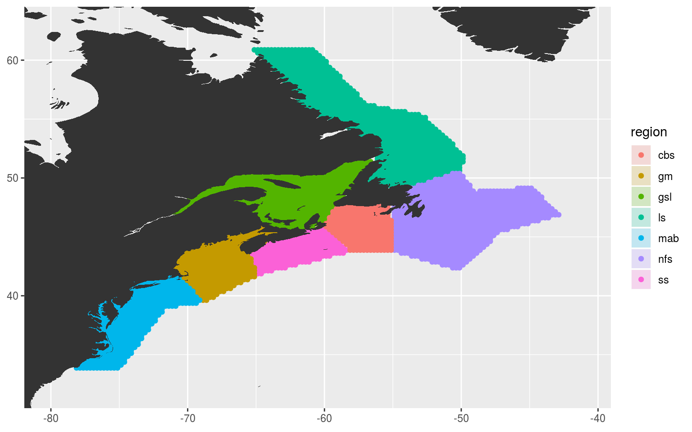
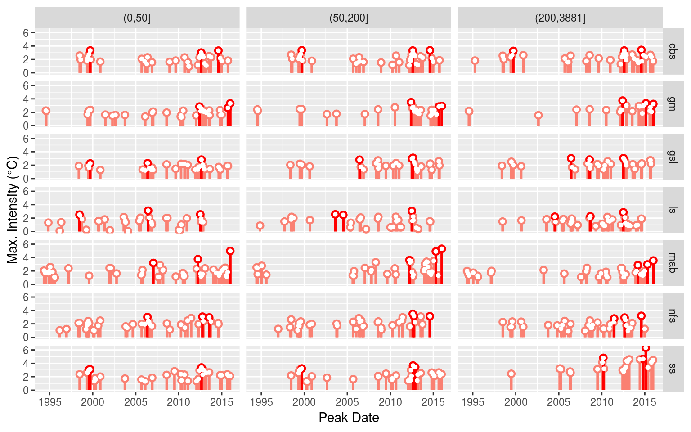

Last updated: 2019-07-31
workflowr checks: (Click a bullet for more information) ✔ R Markdown file: up-to-date
Great! Since the R Markdown file has been committed to the Git repository, you know the exact version of the code that produced these results.
✔ Environment: empty
Great job! The global environment was empty. Objects defined in the global environment can affect the analysis in your R Markdown file in unknown ways. For reproduciblity it’s best to always run the code in an empty environment.
✔ Seed:
set.seed(20190513)
The command set.seed(20190513) was run prior to running the code in the R Markdown file. Setting a seed ensures that any results that rely on randomness, e.g. subsampling or permutations, are reproducible.
✔ Session information: recorded
Great job! Recording the operating system, R version, and package versions is critical for reproducibility.
✔ Repository version: 498909b
wflow_publish or wflow_git_commit). workflowr only checks the R Markdown file, but you know if there are other scripts or data files that it depends on. Below is the status of the Git repository when the results were generated:
Ignored files:
Ignored: .Rhistory
Ignored: .Rproj.user/
Ignored: data/ALL_anom.Rda
Ignored: data/ERA5_lhf.Rda
Ignored: data/ERA5_lwr.Rda
Ignored: data/ERA5_qnet.Rda
Ignored: data/ERA5_qnet_anom.Rda
Ignored: data/ERA5_qnet_clim.Rda
Ignored: data/ERA5_shf.Rda
Ignored: data/ERA5_swr.Rda
Ignored: data/ERA5_t2m.Rda
Ignored: data/ERA5_t2m_anom.Rda
Ignored: data/ERA5_t2m_clim.Rda
Ignored: data/ERA5_u.Rda
Ignored: data/ERA5_u_anom.Rda
Ignored: data/ERA5_u_clim.Rda
Ignored: data/ERA5_v.Rda
Ignored: data/ERA5_v_anom.Rda
Ignored: data/ERA5_v_clim.Rda
Ignored: data/GLORYS_mld.Rda
Ignored: data/GLORYS_mld_anom.Rda
Ignored: data/GLORYS_mld_clim.Rda
Ignored: data/GLORYS_u.Rda
Ignored: data/GLORYS_u_anom.Rda
Ignored: data/GLORYS_u_clim.Rda
Ignored: data/GLORYS_v.Rda
Ignored: data/GLORYS_v_anom.Rda
Ignored: data/GLORYS_v_clim.Rda
Ignored: data/NAPA_clim_U.Rda
Ignored: data/NAPA_clim_V.Rda
Ignored: data/NAPA_clim_W.Rda
Ignored: data/NAPA_clim_emp_ice.Rda
Ignored: data/NAPA_clim_emp_oce.Rda
Ignored: data/NAPA_clim_fmmflx.Rda
Ignored: data/NAPA_clim_mldkz5.Rda
Ignored: data/NAPA_clim_mldr10_1.Rda
Ignored: data/NAPA_clim_qemp_oce.Rda
Ignored: data/NAPA_clim_qla_oce.Rda
Ignored: data/NAPA_clim_qns.Rda
Ignored: data/NAPA_clim_qsb_oce.Rda
Ignored: data/NAPA_clim_qt.Rda
Ignored: data/NAPA_clim_runoffs.Rda
Ignored: data/NAPA_clim_ssh.Rda
Ignored: data/NAPA_clim_sss.Rda
Ignored: data/NAPA_clim_sst.Rda
Ignored: data/NAPA_clim_taum.Rda
Ignored: data/NAPA_clim_vars.Rda
Ignored: data/NAPA_clim_vecs.Rda
Ignored: data/OAFlux.Rda
Ignored: data/OISST_sst.Rda
Ignored: data/OISST_sst_anom.Rda
Ignored: data/OISST_sst_clim.Rda
Ignored: data/node_mean_all_anom.Rda
Ignored: data/packet_all.Rda
Ignored: data/packet_all_anom.Rda
Ignored: data/packet_nolab.Rda
Ignored: data/packet_nolabgsl.Rda
Ignored: data/som_all_anom.Rda
Ignored: data/som_nolab.Rda
Ignored: data/som_nolabgsl.Rda
Ignored: data/synoptic_states.Rda
Ignored: data/synoptic_vec_states.Rda
Untracked files:
Untracked: data/node_mean_nolab.Rda
Untracked: data/node_mean_nolabgsl.Rda
Untracked: output/som_plot_mld_anom.pdf
Untracked: output/som_plot_qnet_anom.pdf
Untracked: output/som_plot_sst_anom_nogsl.pdf
Untracked: output/som_plot_t2m_anom.pdf
Untracked: output/som_plot_u10_anom.pdf
Untracked: output/som_plot_u_anom.pdf
Untracked: output/som_plot_v10_anom.pdf
Untracked: output/som_plot_v_anom.pdf
Unstaged changes:
Modified: code/functions.R
Modified: code/workflow.R
Modified: data/.gitignore
Modified: output/som_plot_sst_anom.pdf
Deleted: output/som_plot_uoce_anom.pdf
| File | Version | Author | Date | Message |
|---|---|---|---|---|
| Rmd | 51ed681 | robwschlegel | 2019-07-25 | Completed anoms for OISST |
| Rmd | 0b6f065 | robwschlegel | 2019-07-25 | Push before beginning to write code for loading entire obs/reanalysis products into memory for clim calculations |
| html | 7792f24 | robwschlegel | 2019-07-24 | Build site. |
| Rmd | bcee698 | robwschlegel | 2019-07-24 | Edited the polygon and sst prep vignettes while redoing methodology. |
| html | 7cc8ec3 | robwschlegel | 2019-07-24 | Build site. |
| Rmd | 463b89a | robwschlegel | 2019-07-24 | Edited the polygon and sst prep vignettes while redoing methodology. |
| html | 81e961d | robwschlegel | 2019-07-09 | Build site. |
| Rmd | 7ff9b8b | robwschlegel | 2019-06-17 | More work on the talk |
| html | c23c50b | robwschlegel | 2019-06-10 | Build site. |
| html | 028d3cc | robwschlegel | 2019-06-10 | Build site. |
| html | c61a15f | robwschlegel | 2019-06-06 | Build site. |
| html | 6dd6da8 | robwschlegel | 2019-06-06 | Build site. |
| Rmd | 25e7e9a | robwschlegel | 2019-06-05 | SOM pipeline nearly finished |
| Rmd | 94ce8f6 | robwschlegel | 2019-06-04 | Functions for creating data packets are up and running |
| Rmd | 65301ed | robwschlegel | 2019-05-30 | Push before getting rid of some testing structure |
| Rmd | 2c3f68c | robwschlegel | 2019-05-28 | Working on the variable prep vignette |
| html | 5cb8e8f | robwschlegel | 2019-05-28 | Build site. |
| html | c09b4f7 | robwschlegel | 2019-05-24 | Build site. |
| Rmd | 5dc8bd9 | robwschlegel | 2019-05-24 | Finished initial creation of SST prep vignette. |
| Rmd | e008b23 | robwschlegel | 2019-05-24 | Push before changing |
| Rmd | 5b6f248 | robwschlegel | 2019-05-23 | More SST clomp work |
| Rmd | 5c2b406 | robwschlegel | 2019-05-23 | Commit before changes |
| html | d544295 | robwschlegel | 2019-05-23 | Build site. |
| Rmd | 9cb3efa | robwschlegel | 2019-05-23 | Updating work done on the polygon prep vignette. |
Building on the work performed in the Polygon preparation vignette, we will now create grouped SST time series for the regions in our study area. We will do this by finding which NOAA OISST pixels fall within each of the region polygons. Also note that throughout this vignette (and this entire project) we will use the climatology period of 1993 – 2018 as this is the shortest time limiting us by the data products used for the various abiotic variables needed for the SOM.
# Packages used in this vignette
library(jsonlite, lib.loc = "../R-packages/")
library(tidyverse) # Base suite of functions
library(heatwaveR, lib.loc = "../R-packages/") # For detecting MHWs
# cat(paste0("heatwaveR version = ", packageDescription("heatwaveR")$Version))
library(FNN) # For fastest nearest neighbour searches
# library(ncdf4) # For opening and working with NetCDF files
library(tidync, lib.loc = "../R-packages/") # For a more tidy approach to managing NetCDF data
library(SDMTools) # For finding points within polygons
library(lubridate) # For convenient date manipulation
# Set number of cores
doMC::registerDoMC(cores = 50)
# Disable scientific notation for numeric values
# I just find it annoying
options(scipen = 999)
# Corners of the study area
NWA_corners <- readRDS("data/NWA_corners.Rda")
# Individual regions
NWA_coords <- readRDS("data/NWA_coords_cabot.Rda")
# The base map
map_base <- ggplot2::fortify(maps::map(fill = TRUE, col = "grey80", plot = FALSE)) %>%
dplyr::rename(lon = long) %>%
mutate(group = ifelse(lon > 180, group+9999, group),
lon = ifelse(lon > 180, lon-360, lon)) %>%
select(-region, -subregion)Up first we take the lon/lat grid from the 1/4 degree daily NOAA OISST product and find which points fall within each region. We will save this information to allow us to then easily pull out the desired pixels from the cube of OISST data.
# Load NAPA bathymetry
# NAPA_bathy <- readRDS("data/NAPA_bathy.Rda")# %>%
# mutate(index = paste0(lon, lat))
OISST_grid <- data.frame(expand.grid(c(seq(0.125, 179.875, by = 0.25), seq(-179.875, -0.125, by = 0.25)),
seq(-89.875, 89.875, by = 0.25)))
colnames(OISST_grid) <- c("lon", "lat")
# saveRDS(OISST_grid, "data/OISST_grid.Rda")
# Trim down OISST grid for faster processing
OISST_grid_region <- OISST_grid %>%
filter(lon >= min(NWA_coords$lon),
lon <= max(NWA_coords$lon),
lat >= min(NWA_coords$lat),
lat <= max(NWA_coords$lat))
# saveRDS(OISST_grid_region, "data/OISST_grid_region.Rda")
# Function for finding and cleaning up points within a given region polygon
pnts_in_region <- function(region_in){
region_sub <- NWA_coords %>%
filter(region == region_in)
coords_in <- pnt.in.poly(pnts = OISST_grid_region[1:2], poly.pnts = region_sub[2:3]) %>%
filter(pip == 1) %>%
dplyr::select(-pip) %>%
mutate(region = region_in)
return(coords_in)
}
# Run the function
NWA_info <- plyr::ldply(unique(NWA_coords$region), pnts_in_region)
# saveRDS(NWA_info, "data/NWA_info.Rda")
# Visualise to ensure success
ggplot(NWA_coords, aes(x = lon, y = lat)) +
geom_polygon(aes(fill = region), alpha = 0.2) +
geom_point(data = NWA_info, aes(colour = region)) +
geom_polygon(data = map_base, aes(group = group), show.legend = F) +
coord_cartesian(xlim = NWA_corners[1:2],
ylim = NWA_corners[3:4]) +
labs(x = NULL, y = NULL)
With the OISST pixels successfully assigned to regions based on their thermal properties we now need to go about clumping these SST pixels into one mean time series per region.
# The OISST data location
OISST_files <- dir("../../data/OISST", full.names = T)
# The files with data in the study area
OISST_files_sub <- data.frame(files = OISST_files,
lon = c(seq(0.125, 179.875, by = 0.25), seq(-179.875, -0.125, by = 0.25))) %>%
filter(lon >= min(NWA_info$lon), lon <= max(NWA_info$lon)) %>%
mutate(files = as.character(files))
# Function for loading the individual OISST NetCDF files and subsetting SST accordingly
# file_name <- OISST_files_sub$files[1]
load_OISST_sub <- function(file_name, coords = NWA_info){
res <- tidync(file_name) %>%
hyper_filter(lat = dplyr::between(lat, min(coords$lat), max(coords$lat)),
time = dplyr::between(time, as.integer(as.Date("1993-01-01")),
as.integer(as.Date("2018-12-31")))) %>%
hyper_tibble() %>%
mutate(time = as.Date(time, origin = "1970-01-01")) %>%
dplyr::rename(temp = sst, t = time) %>%
select(lon, lat, t, temp) %>%
left_join(coords, by = c("lon", "lat")) %>%
filter(!is.na(region))
# return(res)
}
# Clomp'em
system.time(
OISST_region <- plyr::ldply(OISST_files_sub$files,
.fun = load_OISST_sub,
.parallel = TRUE) %>%
group_by(region, t) %>%
summarise(temp = mean(temp, na.rm = T))
) # 18 seconds
# Save
# saveRDS(OISST_region, "data/OISST_region.Rda")With our clumped SST time series ready the last step in this vignette is to detect the MHWs within each.
# Load the time series data
OISST_region <- readRDS("data/OISST_region.Rda")
# Calculate base results
system.time(
OISST_region_MHW <- OISST_region %>%
group_by(region) %>%
nest() %>%
mutate(clims = map(data, ts2clm,
climatologyPeriod = c("1993-01-01", "2018-12-31")),
events = map(clims, detect_event),
cats = map(events, category)) %>%
select(-data, -clims)
) # 2 seconds
# saveRDS(OISST_region_MHW, "data/OISST_region_MHW.Rda")With the MHWs detected, let’s visualise the results to ensure everything worked as expected.
# Load MHW results
OISST_region_MHW <- readRDS("data/OISST_region_MHW.Rda")
# Events
OISST_MHW_event <- OISST_region_MHW %>%
select(-cats) %>%
unnest(events) %>%
filter(row_number() %% 2 == 0) %>%
unnest(events)
event_lolli_plot <- ggplot(data = OISST_MHW_event , aes(x = date_peak, y = intensity_max)) +
geom_lolli(colour = "salmon", colour_n = "red", n = 3) +
labs(x = "Peak Date", y = "Max. Intensity (°C)") +
# scale_y_continuous(expand = c(0, 0))+
facet_wrap(~region)
# ggsave(plot = event_lolli_plot, filename = "output/event_lolli_plot.pdf", height = 7, width = 13)
# Visualise
event_lolli_plot
| Version | Author | Date |
|---|---|---|
| 7cc8ec3 | robwschlegel | 2019-07-24 |
| 81e961d | robwschlegel | 2019-07-09 |
| 6dd6da8 | robwschlegel | 2019-06-06 |
| c09b4f7 | robwschlegel | 2019-05-24 |
Everything appears to check out. Up next in the Variable preparation vignette we will go through the steps necessary to build the data that will be fed into our self-organising maps as seen in the Self-organising map (SOM) analysis vignette.
sessionInfo()R version 3.6.1 (2019-07-05)
Platform: x86_64-pc-linux-gnu (64-bit)
Running under: Ubuntu 16.04.5 LTS
Matrix products: default
BLAS: /usr/lib/openblas-base/libblas.so.3
LAPACK: /usr/lib/libopenblasp-r0.2.18.so
locale:
[1] LC_CTYPE=en_CA.UTF-8 LC_NUMERIC=C
[3] LC_TIME=en_CA.UTF-8 LC_COLLATE=en_CA.UTF-8
[5] LC_MONETARY=en_CA.UTF-8 LC_MESSAGES=en_CA.UTF-8
[7] LC_PAPER=en_CA.UTF-8 LC_NAME=C
[9] LC_ADDRESS=C LC_TELEPHONE=C
[11] LC_MEASUREMENT=en_CA.UTF-8 LC_IDENTIFICATION=C
attached base packages:
[1] stats graphics grDevices utils datasets methods base
other attached packages:
[1] bindrcpp_0.2.2 lubridate_1.7.4 SDMTools_1.1-221 tidync_0.2.1
[5] FNN_1.1.2.1 heatwaveR_0.4.0 forcats_0.3.0 stringr_1.3.1
[9] dplyr_0.7.6 purrr_0.2.5 readr_1.1.1 tidyr_0.8.1
[13] tibble_1.4.2 ggplot2_3.0.0 tidyverse_1.2.1 jsonlite_1.6
loaded via a namespace (and not attached):
[1] Rcpp_0.12.18 lattice_0.20-35 assertthat_0.2.0
[4] rprojroot_1.3-2 digest_0.6.16 foreach_1.4.4
[7] R6_2.2.2 cellranger_1.1.0 plyr_1.8.4
[10] backports_1.1.2 evaluate_0.11 httr_1.3.1
[13] pillar_1.3.0 rlang_0.2.2 lazyeval_0.2.1
[16] readxl_1.1.0 ncmeta_0.0.4 rstudioapi_0.7
[19] data.table_1.12.2 whisker_0.3-2 R.utils_2.7.0
[22] R.oo_1.22.0 rmarkdown_1.10 labeling_0.3
[25] htmlwidgets_1.3 munsell_0.5.0 broom_0.5.0
[28] compiler_3.6.1 modelr_0.1.2 pkgconfig_2.0.2
[31] htmltools_0.3.6 tidyselect_0.2.4 workflowr_1.1.1
[34] codetools_0.2-15 doMC_1.3.5 viridisLite_0.3.0
[37] crayon_1.3.4 withr_2.1.2 R.methodsS3_1.7.1
[40] grid_3.6.1 nlme_3.1-137 gtable_0.2.0
[43] git2r_0.23.0 magrittr_1.5 scales_1.0.0
[46] ncdf4_1.16.1 cli_1.0.0 stringi_1.2.4
[49] xml2_1.2.0 iterators_1.0.10 tools_3.6.1
[52] glue_1.3.0 RNetCDF_1.9-1 maps_3.3.0
[55] hms_0.4.2 parallel_3.6.1 yaml_2.2.0
[58] colorspace_1.3-2 rvest_0.3.2 plotly_4.9.0
[61] knitr_1.20 bindr_0.1.1 haven_1.1.2 This reproducible R Markdown analysis was created with workflowr 1.1.1